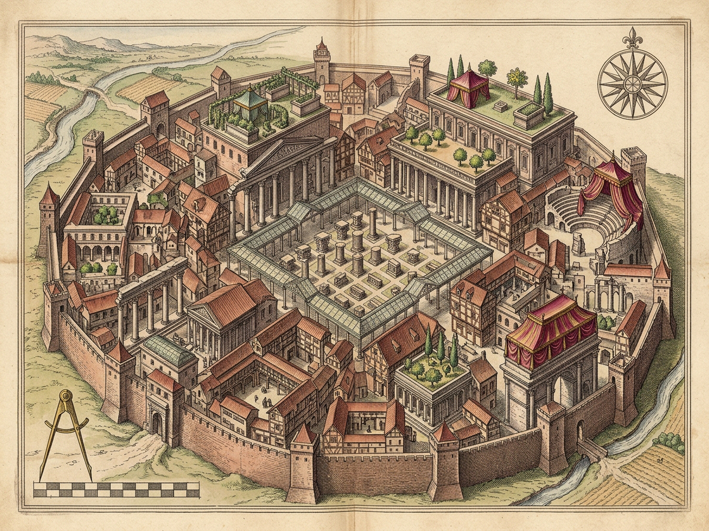
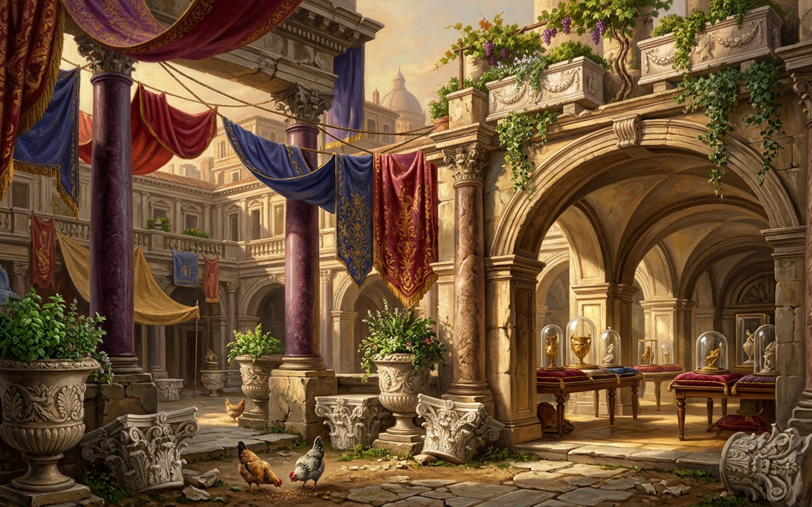

CLARICE
VII · IV
PALIMPSEST EQUILIBRIUM
108 SHARDS
[C] Plague
[B] Butterfly
[V] Museum
[S] Shuffle
[H] Origin Test
[P] Plates
[M] Sound: On
[R] Reset
Stratified Spolia Vault · Click Shard or [1]–[9] to Repurpose
[4] Corinthian Capitals
Catastrophe & Chrysalis Wheel
Cycles 0 · Plagues 0 · Surges 0
[S] Shuffle Eras
[C] Beggar Chrysalis
[B] Butterfly Bricolage
[V] Museum Vitrines
Population
58%
Reverence
52%
Provenance Loss
64%
Nine Indestructible Shards · Role & Reverence Ledger
108 / 108 Shards Conserved
Lost-Origin Invariant & Spolia Audit
[H] Test First-Clarice Hypothesis
FIRST CLARICE PROVEN
FALSE (UNPROVEN HYPOTHESIS)
ERA ORDER RECOVERABLE
FALSE (SUCCESSION LOST)
CONSERVED SHARD MASS
108 / 108
Audit pending: press [H] or select any Σ-stratum above to test whether an uncorrupted First Clarice exists beneath the spolia.
Heterochronic Clarice stands assembled from salvaged capitals, basil-planted funerary urns, and glass-cased pauper bundles; no surviving shard remembers which city came first.
CLARICE · ROYAL PLATES
VII · IV
Diptych
Cartographic Survey
Illuminated Vista
[Z] Loupe 1.75x: Off
[Esc] Close

Plate I · Cartographic Survey
1600 × 1200

Plate II · Illuminated Vista
1600 × 1000